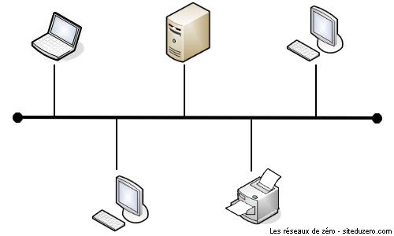
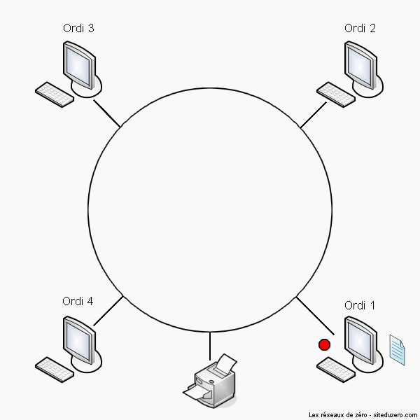
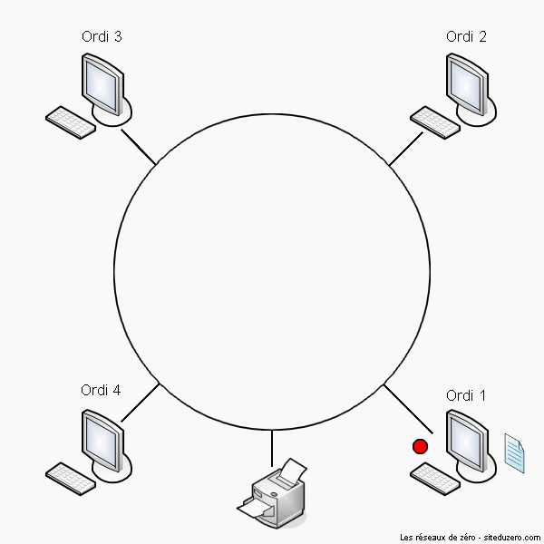

Les Notions de Réseaux
La notion de réseau est aujourd’hui très répandue, dans plusieurs domaines et récemment les réseaux de télécommunication se sont multipliés.
On appelle réseau informatique, un ensemble d’équipements informatiques interconnectés et échangeant des informations sous forme de données binaires. Un réseau permet :
- La communication de plusieurs ordinateurs entre eux ;
- Le partage de fichiers, d’imprimantes ;
- Le jeu à plusieurs ;
- L’unicité de l’information (pour des fichiers souvent mis à jour, le réseau permet de mettre à jour tous les PC le constituant) ;
- Une organisation plus efficace et donc une meilleure productivité.
Il existe différents réseaux :
- Les réseaux Peer to Peer (deux ordinateurs reliés seulement donc ils ont une "fonction" égale sur le réseau) ;
- Les réseaux Client/serveur. Ils sont organisés avec des postes serveurs qui fournissent l’information au client.
Il existe plusieurs organisations de réseaux, qui ont chacune des capacités et des contraintes différentes. On choisira donc une topologie plus qu’une autre en fonction du réseau à mettre en place :
La topologie en bus ; La topologie en étoile ; La topologie en anneau ;
La topologie en anneau ;
Il existe aussi plusieurs types de réseaux. Les plus fréquent sont :
- Les LAN ;
- Les MAN ;
- Les WAN
Les principaux composants d’interconnexion sont :
-
Carte réseau :
La carte réseau est le matériel de base indispensable, qui traite tout au sujet de la communication dans le monde du réseau.
-
Concentrateur (hub) :
Le concentrateur permet de relier plusieurs ordinateurs entre eux, mais on lui reproche le manque de confidentialité.
-
Commutateur (switch) :
Le commutateur fonctionne comme le concentrateur, sauf qu’il transmet des données aux destinataires en se basant sur leurs adresses MAC (adresses physiques). Chaque machine reçoit seulement ce qui lui est adressé.
-
Routeur :
Le routeur permet d’assurer la communication entre différents réseaux pouvant être fondamentalement différents (réseau local et Internet).
-
Le proxy :
Dans un réseaux informatique, il est appelé un serveur proxy. C’est souvent un logiciel ou une machine qui est entre le client et le serveur consulté. Il sert à faire la liaison entre le client et le serveur. La plupart des cas, le serveur proxy est utilisé entre un réseau local et internet. Le rôle principal d’un proxy est d’assurer l’accélération de la navigation, la journalisation des requêtes, la sécurité du réseau local, le filtrage et l’anonymat. Le plus souvent le serveur proxy est utilisé pour le web, il s’agit alors d’un proxy HTTP. Mais il peut exister des serveurs proxy pour chaque protocole applicatif.
-
Répéteur :
Le répéteur reçoit des données par une interface de réception et les renvoie plus fort par l’interface d’émission. On parle aussi de relais en téléphonie et radiophonie.
-
Le pont :
C’est un équipement qui sert à relier deux réseaux utilisant le même protocole .Les ponts en plus de régénérer seulement les signaux électriques, comme les répéteurs, ils dupliquent les trames qui circulent d’un segment à l’autre et suppriment s bruits, les erreurs ou les trames mal formatées. Quand il reçoit la trame, le pont est en mesure d’identifier l’émetteur et le récepteur ; comme ça il dirige la trame directement vers la machine destinataire.
-
La passerelle :
C’est un système matériel et logiciel qui sert à relier deux réseaux utilisant deux protocoles et/ou architectures différents. Lorsqu’ un utilisateur distant contact un tel dispositif, celui-ci examine sa requête, et si celle-ci correspond aux règles que l’administrateur réseaux a défini, la passerelle crée un pont entre les deux réseaux. La passerelle transmet les informations indirectement car elle doit les traduire pour assurer la transmission tout en respectant les deux protocoles.
-
Le modem :
Le modem, ou modulateur-démodulateur, est un équipement qui sert à lier le réseau téléphonique au réseau informatique. Pour transmettre des données informatiques à distance, il utilise la ligne téléphonique comme support de transmission. Comme la ligne téléphonique utilise des signaux analogiques et que les réseaux informatiques utilise des signaux numériques, le modem doit traduire les signaux numériques en signaux analogiques et vis versa. Le modem utilise donc les techniques de modulation et de démodulation.
Et enfin, il existe plusieurs types de protocoles tels que :
- HTTP ;
- FTP ;
- SMTP etc...